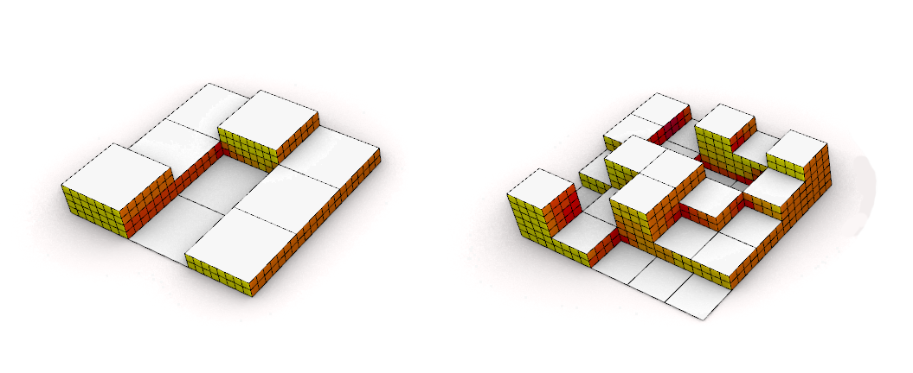
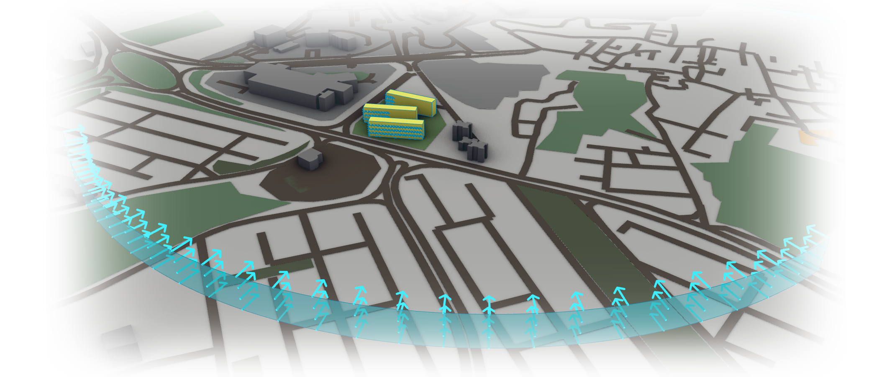

Optimizing the Acquisition of Natural Light in a Residential Complex
This generative optimization effort was part of the dissertation project for my master's degree.
The project was to design a residential complex in a 10000㎡ plot in district 5 of Tehran.
As follows, We tried to implement Generative Design techniques in the earlier phases of design.
This design project's goal, along with all the complexities of any housing project, was to optimize the buildings' natural light acquisition.
That quantifiable criterion seemed suitable to harness computers' computational capabilities for exploring the possibilities and choosing from a range of alternatives.
First, we considered a step-by-step framework to break down the earlier decisions of design into different phases.
Each phase was defined as a different parametric definition with different objectives and parameters to optimize.
First Phase:
In the first phase, the general distribution of mass and emptiness on the site and its possibilities were probed. A parametric definition in which the site plan was divided into a dynamic number of divisions in both x and y directions was created. Each created block was then given a dynamic height of its own.
All this was a setup that could be assessed with the Grasshopper plugin "Ladybug" for the number of hours of direct sunlight the exterior faces of the blocks received.

Using the Wallacei plugin, those three parameters (number of divisions in x, number of divisions in y, and height of each block) were manipulated and created a solution space of possible outcomes.
The sunlight hours assessment by Ladybug was the objective that was being optimized.

The solution space created from different permutations of genes (changing parameters of height and division) is so vast that it is extremely calculation-heavy to explore thoroughly.
Therefore an evolutionary algorithm is implemented that creates generations of possible solutions.
The first generation is random, but the later generations are made from crossovers of a percentage of the previous generation that is more fit.
Also, a chance for mutations is added to prevent getting stuck in local optimums.
 Such a procedure was used to optimize the direct sunlight hours of the exterior faces as a single objective.
Therefore the solution space has one dimension, and the Pareto front is a single solution.
Such a procedure was used to optimize the direct sunlight hours of the exterior faces as a single objective.
Therefore the solution space has one dimension, and the Pareto front is a single solution.
As shown in these charts, the overall fitness trend is improving over generations.
Second Phase:
In this phase, a new definition was developed to fine-tune the previous phase's results and investigate further objectives.
As the general form and the number of blocks were decided, new parameters of placement and rotation for the blocks were defined.
Two new objectives of the favorable view of the southeast and proportionality of the yards were taken into consideration as well.

Every multi-objective optimization yields not a single optimum solution, but an array of them called the Pareto front.
As this is a three-objective solution space, the Pareto front would be a surface.
It will cover a spectrum of solutions with extremes in which one objective is optimal at the expense of the others.
In the middle are the trade-off solutions, which are a compromise of both.

In this graph, the three objectives are shown with vertical lines, and every line is an individual in a generation, from red, the first, to Blue, the last.
As shown, fitness objectives are effectively minimized through generations.
(this plugin tries to reduce the fitness numbers, the problem definitions must be accordingly)
This animation shows the solution space of this optimization and how with each generation, the Pareto front is improving.

From the Pareto front, one solution with a stronger inclination towards the first objective, the sunlight hours, was selected and became the ground for the next phase.
Phase 3
In this phase, the focus was on fine-tuning the south-facing faces of the buildings.
Moving forward with the selected solution from the last stage, we developed a new definition to explore its possibilities with balconies and their placement in mind.
An array of genes manipulated whether each part of the face is recessed or bulged. (1 balcony, -1 recess, and 0 straight)
This definition required more complex handling of grasshopper data trees containing points and integers.
Therefore I was more comfortable iterating through the points and processing them using a C# script rather than working on the grasshopper canvas.
This costume node was written in C# handling the points and their back-and-forth movements, creating the recesses and balconies.

The results from this last phase and the patterns that emerged regarding the balconies were translated into the final design of the residential complex.
Creating a Fluid Form Using a Single Repeating Module and Varying Connector Parameters
This project's main goal was to create a stable fluid form using a single module.
Also, we wanted the form to be controlled only by the forces that the identical modules and their connections apply to each other.
In other words, we wanted the curvatures not to be formed by changing modules in shape and size or any external force;
but to be the result of the forces between identical modules connecting differently.
First, we considered different alternatives for the general form.
Early on, we understood that if the structure is to bear itself only by relying on its connections, it must have a double curvature.
So it came down to these two experimental forms.
The remaining alternatives were each divided by a grid.
The modules would later be distributed on this network.
The next step was to decide about the module's shape and how it would connect to itself.
Simple square modules were selected, and the grids were populated with square pieces in Grasshopper.
Intersecting lines were defined to pierce through each couple of pieces and determine the punching holes' location to connect them.
As each piece has a different and unique set of punching holes, all of the modules were numbered and reoriented on a surface to become ready for laser-cutting.
First, we tried to make initial prototypes using cardboard and Acupuncture needles.
With some changes and assessments, we prepared the Grasshopper definition for a final prototype with polycarbonate as the primary material.

In the end, the pieces were connected one by one using the predetermined holes and 8mm bolts and nuts.
As we joined more and more pieces, the double curvature started to emerge.
The final fabricated prototype was a stable shell with a double curvature defined by the connections of a single repeating module